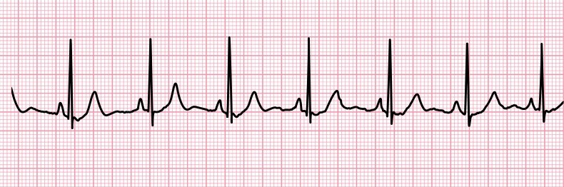

Add small picture of type of data?
To most used term nowadays is “Data”. From Facebook to Google, from big to small, all the companies are using the data from their user/customers. what are they really using? They are using the information shared by the users, the purchase history, the places, or the hobbies shared by the user. In a word, whatever a user is sharing, everything is considered data when they are stored in the form of observation or measurement, which is represented as text, number, or media. However, not all of them are useful to certain companies or stakeholders. The meaningful representation of data can generate new insight, which can help a company to take certain decisions. To understand the importance of the data, check out the following video: Your data is your currency | Mozhgan Tavakolifard | TEDxArendal
A signal is commonly referred to as a sign or gesture which conveys certain information. However, in digital electronic or signal processing, the signal is considered as the quantity that varies over a parameter such as space or time. We are all aware of the audio signal or heartbeat signal, which are quite common in our daily life. The audio signal is the electrical representation of sound.
The following equation represents the signal, where x is the independent variable, and f is the dependent variable.
f(x) = -ax^2+bx+c
Depending on the value of the shape of the signal will vary; if a>0, the signal will be a downward parabola, a=0, the signal will be a straight line, and if a<0, it will be an upward parabola.
When any data is represented in an organized manner, that becomes information. To learn more about data representation, check out the following video: What is Data?
Signal is another form of data. For example, using an ECG sensor device we can capture the electrical impulses of the heart and produce signals to represent ECG signals which can be plotted over time. This signal can be interpreted by the physician to understand the issue of the heart, if any.

© aedsuperstore